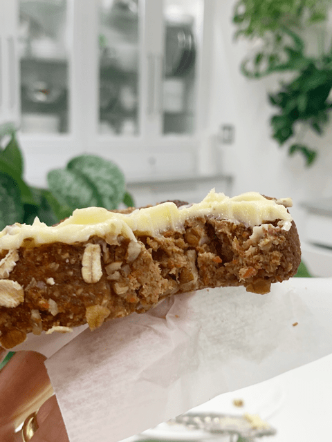

Carrot Raisin Bread
– raw, vegan, gluten-free –

Carrot pulp. Let’s talk about carrot pulp.
Have you ever made carrot juice and ended up with a mound of carrot pulp sitting in a bowl? Chances are, it went straight to the trash or compost pile. But here’s the thing—you can use that pulp in so many recipes, along with the leftovers from other juices. The flavor isn’t as intense as the whole vegetable, but it still packs a nutritional punch.
I’ve used veggie pulp in everything from bread to crackers. If you don’t have time to deal with the pulp right away, just stash it in an airtight container and pop it in the fridge or freezer. Heads up: I haven’t tested this recipe with freshly grated carrots, but you’re more than welcome to try! Just keep in mind there’ll be more moisture to manage, so you might need to cut back on the other liquids.
Sometimes I even dehydrate my carrot pulp and grind it into flour. If you’re new to raw breads, remember—they tend to be denser in texture.
I’ve never met a bread I didn’t like—except if it had mold on it, of course. :) Honestly, I’ve always favored dense, heavy breads, so discovering raw breads with their amazing flavors and textures was a total delight. I hope you enjoy this recipe as much as I do.
Blessings,
amie sue
P.S. I originally posted this recipe back on April 17th, 2013. Today, I added some fresh photos and cleaned up the writing. Let’s just say, I’ve gotten a lot better over the years. blessings, amie sue

Ingredients:
1 large loaf 9 x 4 x 2 1/2 tall”
Dry Ingredients:
- 1 cup (95 g) rolled, gluten-free oat flour
- 3 Tbsp (33 g) flaxseeds, ground
- 2 Tbsp (11 g) psyllium husks
- 1 Tbsp (7 g) ground Ceylon cinnamon
- 1 tsp (3 g) ground nutmeg
- 3/4 tsp (6 g) Himalayan pink salt
- 1/2 tsp (1 g) ground cloves
Wet Ingredients:
Hand mix in:
- 1/2 cup (55 g) chopped pecans, soaked
- 3/4 cup (115 g) raisins
Topping:
- 1 tsp (4 g) raw coconut crystals, powdered
- 1 Tbsp (14 g) hot water
- oats & crushed pecans for dusting
Preparation:
- In the food processor fitted with the “S” blade, place the following ingredients: oat flour, flax, psyllium powder, nutmeg, cinnamon, cloves, and salt. Pulse together until combined. Place the dry ingredients in a large bowl and set aside.
- In the same food processor bowl, combine nut pulp, carrot pulp, mashed banana, date paste, and stevia.
- Depending on how dry your almond pulp and carrot pulp is, you may need to use more or less almond milk or carrot juice, so add 1/2 cup at a time. Pulse together till everything is well incorporated.
- Add the wet ingredients to the dry ingredients and mix everything with your fingers.
- Add pecans and raisins. Mix well with your hands, trust me it’s just more fun that way.
- Shape into a loaf and place on the mesh sheet that comes with the dehydrator.
- If the batter seems too wet for some odd reason, let it rest for about 15-30 minutes so the flax can do its binding action.
- Have fun with the shaping process. Try to visualize what a baked loaf looks like and sculpt the loaf.
- Score the top of the loaf with a knife. I later use these score marks as a guide in slicing my pieces.
- In a small bowl, combine the coconut crystals and water, stirring it until it dissolves. With a pastry brush, coat the surface of the bread.
- By doing this, it will add a pleasant sweetness to the crust.
- It will also give the bread that baked appearance, which is fun.
- Sprinkle oats on top and gently press them in a bit.
- Dehydrate at 145 degrees for 1 hour. This will create a crust on the outside.
- Remove from the dehydrator, place the loaf on a cutting board, and slice pieces to the desired thickness. Don’t slice the bread on the mesh; you don’t want to risk cutting it.
- I did mine at about 1 inch thick.
- When slicing the bread at this stage, be sure to use a serrated knife (blade has small teeth, this helps to cut through nice and smooth) Also, see-saw back and forth with downward pressure as you cut the slices to prevent the dough from squashing down.
- Return the bread to the mesh sheet laying the pieces flat.
- Decrease the temperature to 115 degrees (F) and continue to dehydrate for 6-10 hours.
- As an indicator, if it is dry enough, touch the center of the bread slices.
- You don’t want it to be doughy, but you also don’t want the bread to dry out too much.
- Shelf life and storage: My recommendation would be to store this bread in an air-tight container, in the fridge, for 3-5 days.
- The more moisture that is left in your bread, the shorter the shelf life. Therefore, shelf life will vary with your drying technique. Whenever I make this bread, it never lasts very long enough to spoil.
- Keep in mind, the whole purpose of eating a raw diet is to eat foods at their peak of freshness, so don’t expect this bread to have a long shelf life.
The Institute of Culinary Ingredients™
- Raw Coconut Crystals add a “brown sugar” flavor to a recipe. Read about it (here).
- Click (here) to learn why I use stevia.
- Dates are a fantastic ingredient for raw food recipes, click (here) to read why.
- Why do I specify Ceylon cinnamon? Click (here) to learn why.
- What is Himalayan pink salt, and does it matter? Click (here) to read more about it.
- Are oats gluten-free? Yes, read more about that (here).
- Are oats raw? Yes, they can be found, click (here) to learn more.
- Do I need to soak and dehydrate oats? Not required but recommended. Click (here) to see why.
- Learn how to grind flaxseeds for ultimate freshness and nutrition. Click (here).
Culinary Explanations:
- Why do I start the dehydrator at 145 degrees (F)? Click (here) to learn the reason behind this.
- When working with fresh ingredients, it is essential to taste test as you build a recipe. Learn why (here).
- Don’t own a dehydrator? Learn how to use your oven (here). I do, however honestly believe that it is a worthwhile investment. Click (here) to learn what I use.
© AmieSue.com